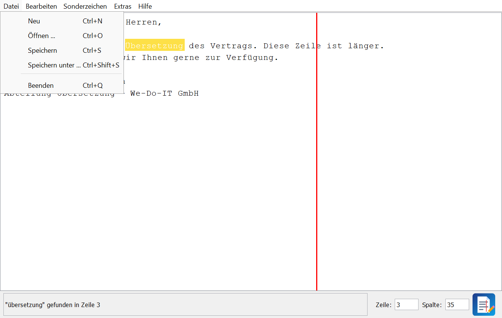
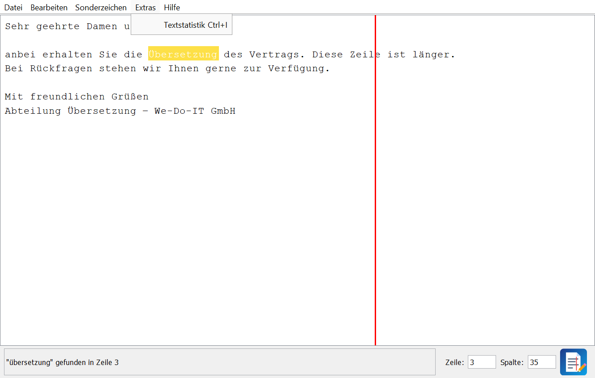

WeDoText
Texteditor für die Abteilung Übersetzung
We-Do-IT GmbH
We-Do-IT GmbH
| Projekt | Entwicklung eines Texteditors (Java Swing, MVC) |
| Name | Nigar [Nachname] |
| Klasse | [Klasse] |
| Abgabe | 11.11.2026 |
| Version | 1.0 |
| Projekt | Entwicklung eines Texteditors (Java Swing, MVC) |
| Name | Nigar [Nachname] |
| Klasse | [Klasse] |
| Abgabe | 11.11.2026 |
| Version | 1.0 |
Die We-Do-IT GmbH ist ein IT-Unternehmen mit mehreren Fachabteilungen. Nach mehreren internen Vorkommnissen in der Abteilung Übersetzung hat die Geschäftsleitung (Herr W. Jürgen) entschieden, dass diese Abteilung weniger Zugriff auf Standardsoftware erhalten soll. Statt allgemeiner Programme soll die Abteilung Individualsoftware bekommen, die genau auf ihre Aufgaben zugeschnitten ist und vom eigenen Entwicklungsteam kontrolliert wird.
Als erstes Programm soll die Abteilung einen eigenen Texteditor erhalten. Den Auftrag dazu hat die Geschäftsleitung per E-Mail an die Entwicklungsabteilung geschickt. Ich habe diesen Auftrag als Mitglied der Entwicklungsabteilung umgesetzt.
| Punkt | Festlegung |
|---|---|
| Auftraggeber | Geschäftsleitung der We-Do-IT GmbH, W. Jürgen |
| Nutzer | Mitarbeiterinnen und Mitarbeiter der Abteilung Übersetzung |
| Programmiersprache | Java 21 |
| Oberfläche | Java Swing |
| Architektur | Model-View-Controller (MVC) |
| Auslieferung | ausführbare .jar-Datei mit Dokumentation als ZIP-Archiv |
| Abgabetermin | 11.11.2026 |
Ein eigener Editor hat für das Unternehmen mehrere Vorteile:
Der Name des Editors ist WeDoText. Er leitet sich vom Firmennamen We-Do-IT ab.
Aus der E-Mail der Geschäftsleitung habe ich folgende Anforderungen abgeleitet. Die rechte Spalte zeigt, wie jede Anforderung im Programm umgesetzt wurde.
| Nr. | Anforderung | Umsetzung im Programm |
|---|---|---|
| A1 | Menüleiste mit Neu, Öffnen (Laden), Speichern, Speichern unter und Beenden | Menü Datei mit allen fünf Einträgen |
| A2 | Dateiauswahl voreingestellt auf .txt, .csv und .java | JFileChooser mit FileNameExtensionFilter beim Öffnen und Speichern unter |
| A3 | Dateiname im Fenstertitel, Angebot zu speichern, wenn nötig | Titel „Dateiname - WeDoText“, ein Stern * zeigt ungespeicherte Änderungen; bei Neu, Öffnen und Beenden wird nachgefragt |
| A4 | Meldung über Erfolg oder Misserfolg mit Dateigröße | Nicht beschreibbares Meldungsfeld in der Statusleiste, z. B. „Erfolgreich gespeichert: brief.txt (1.204 Bytes)“ |
| A5 | Anzeige der Cursorposition (Zeile und Spalte) mit Eingabemöglichkeit | Felder Zeile und Spalte in der Statusleiste; Eingabe + Enter springt zur Position |
| A6 | Rote senkrechte Linie ab Spalte 60 | Eigene Klasse EditorTextArea zeichnet die Linie in paintComponent |
| A7 | Suchen mit Shortcut und Anzeige der Markierung | Strg+F, F3; Treffer wird gelb markiert |
| A8 | Suche startet am Cursor, geht zum nächsten Fundort, Meldung „nicht gefunden“ bzw. „von vorne“ | Methode findNext(); am Textende Frage „Von vorne weitersuchen?“ |
| A9 | Ersetzen ab Cursorposition, Meldung wenn nicht gefunden | Buttons Ersetzen und Alle ersetzen (Strg+H) |
| A10 | Groß- und Kleinschreibung beachten oder ignorieren | Checkbox im Suchdialog, gilt für Suchen und Ersetzen |
| A11 | Eigenes, skalierbares Logo unten rechts (mit JPanel) | Klasse LogoPanel zeichnet das Logo mit Java2D in jeder Größe; auch als Fenstersymbol |
| A12 | Hilfe-Menü mit Copyright (Jahr, Name, Klasse) | Menü Hilfe → Über WeDoText |
| A13 | Menü / Dialog für Sonderzeichen | Menü Sonderzeichen mit häufigen Zeichen und einer Tabelle mit 80 Zeichen (Strg+T) |
| A14 | Gängige Shortcuts | Alle Menüeinträge haben Tastenkürzel, Übersicht unter Hilfe (F1) |
| A15 | Individuelle Sonderfunktion mit Beschreibung unter Hilfe | Extras → Textstatistik, Beschreibung unter Hilfe → Zusatzfunktion |
| A16 | Swing und MVC | Pakete model, view, controller |
.jar-Datei ohne weitere Bibliotheken, Java 21.Ich bin schrittweise (inkrementell) vorgegangen: Zuerst wurde ein lauffähiges Grundgerüst gebaut und danach Funktion für Funktion ergänzt und getestet. Jeder Schritt wurde mit Git gesichert.
| Zeitraum | Phase | Tätigkeiten |
|---|---|---|
| 09.09.2026 | Analyse | Auftrag der Geschäftsleitung lesen, Anforderungen auflisten (Kapitel 2), Projekt in Eclipse anlegen |
| 14.09.2026 | Entwurf + Grundgerüst | Fensteraufbau (Layout), Textfeld, erste Speicherfunktion |
| 17.09.2026 | Dateifunktionen | Öffnen, Speichern, Speichern unter, Neu, Beenden, Über-Dialog |
| Okt. 2026 | UML-Entwurf | Anwendungsfall-, Klassen- und Sequenzdiagramm; Aufteilung in Model, View und Controller |
| Nov. 2026 | Umsetzung MVC | Umbau in die drei Pakete, Statusleiste, rote Linie, Suchen/Ersetzen, Sonderzeichen, Logo, Textstatistik |
| Nov. 2026 | Test + Abgabe | Tests (Kapitel 7), Dokumentation, .jar erstellen, ZIP-Archiv abgeben (11.11.2026) |
Das Anwendungsfalldiagramm zeigt, was ein Mitarbeiter der Abteilung Übersetzung mit dem Editor tun kann. Es diente als Checkliste für die Menüs: Jeder Anwendungsfall wird zu mindestens einem Menüeintrag.
„Speichern anbieten“ ist in „Datei öffnen / neu“ und „Datei speichern“ eingebunden (beim Beenden ebenso): Bevor ungespeicherte Änderungen verloren gehen, fragt das Programm nach. „Text ersetzen“ erweitert „Text suchen“, weil beide denselben Dialog verwenden.
Das Programm ist nach dem Entwurfsmuster MVC aufgebaut. Jede Klasse hat genau eine Aufgabe:
| Schicht | Klassen | Aufgabe |
|---|---|---|
| Model | EditorModel | Daten und Logik: aktuelle Datei, Änderungsstatus, Laden/Speichern, Suchalgorithmus, Textstatistik. Kennt keine Swing-Klassen und weder View noch Controller. |
| View | EditorView, EditorTextArea, LogoPanel, SearchDialog, SpecialCharDialog |
Oberfläche: Fenster, Menüs, Statusleiste, Dialoge. Enthält keine Programmlogik, sondern bietet Getter und Anzeige-Methoden an. |
| Controller | EditorController | Verbindet beides: hängt ActionListener an die Menüs und Buttons, ruft das Model auf und aktualisiert danach die View. |
| Start | Main | Erzeugt Model, View und Controller und zeigt das Fenster an. |
Der Ablauf ist immer gleich: Benutzer → View → Controller → Model → Controller → View.
Beispiel Speichern: Der Benutzer klickt auf Speichern (View), der Controller holt den Text aus dem Textfeld
und gibt ihn an model.save(). Danach schreibt der Controller die Erfolgsmeldung mit der Dateigröße ins
Meldungsfeld der View.
Vorteil: Man könnte die Oberfläche austauschen (z. B. JavaFX statt Swing), ohne das Model zu ändern. Außerdem lässt sich die Suchlogik im Model ohne Oberfläche testen.
Erläuterung: Main erzeugt die drei MVC-Bausteine. Der EditorController hält eine
Referenz auf Model und View, umgekehrt gibt es keine Verbindung. Die EditorView ist ein JFrame und
besteht aus dem Textfeld und den beiden Dialogen (Komposition, schwarze Raute). Das LogoPanel wird in der
Statusleiste angezeigt (gestrichelt). Für die besonderen Anforderungen wurden Swing-Klassen durch
Vererbung erweitert: EditorTextArea erbt von JTextArea (rote Linie), LogoPanel von
JPanel (Logo zeichnen), die beiden Dialoge von JDialog.
Das Sequenzdiagramm zeigt am Beispiel der Suche, wie die MVC-Klassen zusammenarbeiten.
Erläuterung des Vorgehens anhand der Diagramme: Aus dem Anwendungsfalldiagramm ergaben sich die
Menüs und Dialoge der View. Im Klassendiagramm habe ich dann festgelegt, welche Klasse welche Aufgabe übernimmt.
Wichtig war dabei: Alles, was ohne Oberfläche funktioniert (Datei lesen/schreiben, Suchen, Statistik),
kommt ins Model. Das Sequenzdiagramm zeigt die Reihenfolge der Aufrufe und half beim Programmieren
der Methode findNext(): Erst wird ab dem Cursor gesucht (Schritt 4); nur wenn nichts gefunden wurde,
fragt das Programm, ob von vorne gesucht werden soll (Schritte 5–6). Anschließend wird der Treffer markiert
und der Cursor dahinter gesetzt, sodass der nächste Klick den nächsten Fundort findet.
src/editor/
├── Main.java Startpunkt, erzeugt Model, View und Controller
├── model/
│ └── EditorModel.java Daten + Logik (ohne Swing)
├── view/
│ ├── EditorView.java Hauptfenster: Menüs, Textfeld, Statusleiste
│ ├── EditorTextArea.java Textfeld mit roter Linie und Suchmarkierung
│ ├── LogoPanel.java skalierbares Logo (Java2D)
│ ├── SearchDialog.java Dialog „Suchen und Ersetzen“
│ └── SpecialCharDialog.java Sonderzeichen-Tabelle
└── controller/
└── EditorController.java Reaktion auf alle Benutzeraktionen
Main)EditorModel model = new EditorModel(); EditorView view = new EditorView(); new EditorController(model, view); // Controller meldet sich an der View an view.setVisible(true);
Die Oberfläche wird mit SwingUtilities.invokeLater im Event-Dispatch-Thread erstellt, so wie es Swing verlangt.
Mit UIManager.setLookAndFeel(...) sieht das Programm aus wie ein normales Windows-Programm.
Die View erstellt nur die Menüeinträge. Der Controller holt sie über Getter und hängt mit Lambda-Ausdrücken die passende Methode an:
view.getSaveItem().addActionListener(e -> save()); view.getFindItem().addActionListener(e -> dialog.open(false)); textArea.addCaretListener(e -> updatePosition()); // Zeile/Spalte bei jeder Cursorbewegung
Die Tastenkürzel werden in der View mit setAccelerator(KeyStroke...) an die Menüeinträge gehängt.
Dadurch funktionieren Menü und Shortcut automatisch gleich.
askToSave)private boolean askToSave() {
if (!model.isModified()) return true; // nichts geändert -> weiter
int answer = view.askSaveChanges(); // Ja / Nein / Abbrechen
if (answer == JOptionPane.YES_OPTION) return save();
return answer == JOptionPane.NO_OPTION; // Abbrechen -> false
}
Diese Methode wird vor Neu, Öffnen und Beenden (auch beim Klick auf das X des Fensters) aufgerufen.
Ob es Änderungen gibt, merkt sich das Model im Attribut modified. Ein DocumentListener am
Textfeld setzt es bei jeder Eingabe auf true. Das Attribut loading verhindert, dass das
Laden einer Datei selbst schon als Änderung zählt.
EditorModel.find)public int find(String text, String query, int from, boolean matchCase) {
for (int i = from; i <= text.length() - query.length(); i++) {
if (text.regionMatches(!matchCase, i, query, 0, query.length())) {
return i;
}
}
return -1;
}
regionMatches vergleicht ab Position i ein Stück des Textes mit dem Suchbegriff. Der erste Parameter
bestimmt, ob Groß-/Kleinschreibung ignoriert wird. Deshalb wird !matchCase übergeben. Die Methode wird
für Suchen, Ersetzen und Alle ersetzen verwendet.
EditorController.findNext)int from = textArea.getCaretPosition();
int index = model.find(text, query, from, dialog.isMatchCase());
if (index < 0 && from > 0 && view.askYesNo("Suchen", "... Von vorne weitersuchen?")) {
index = model.find(text, query, 0, dialog.isMatchCase());
}
...
textArea.markText(index, index + query.length()); // gelbe Markierung
textArea.setCaretPosition(index);
textArea.moveCaretPosition(index + query.length()); // Cursor steht hinter dem Treffer
Beim Ersetzen wird ab getSelectionStart() gesucht. So wird ein gerade gefundener (markierter) Treffer selbst
ersetzt und nicht erst der nächste.
EditorTextArea.paintComponent)protected void paintComponent(Graphics g) {
super.paintComponent(g); // normalen Text zeichnen
String before = "m".repeat(EditorModel.MARK_COLUMN - 1); // 59 Zeichen
int x = getInsets().left + (int) Math.round(
getFont().getStringBounds(before, ((Graphics2D) g).getFontRenderContext()).getWidth());
g.setColor(Color.RED);
g.fillRect(x, 0, 2, getHeight()); // Linie über die ganze Höhe
}
Das Textfeld nutzt eine Schrift mit fester Zeichenbreite (Monospaced), daher ist jede Spalte gleich breit. Gemessen wird die Breite von 59 Zeichen, weil ein einzelnes Zeichen oft keine ganze Pixelbreite hat. Würde man eine gerundete Zeichenbreite mal 59 nehmen, stünde die Linie bei hoher Bildschirmskalierung einige Spalten zu weit links.
int caret = textArea.getCaretPosition(); int line = textArea.getLineOfOffset(caret); // ab 0 gezählt int column = caret - textArea.getLineStartOffset(line); lineField.setText(String.valueOf(line + 1)); // Anzeige ab 1
Bei der Eingabe rechnet goToPosition() umgekehrt: Zeilenanfang + Spalte − 1. Zu große Werte werden auf das
Zeilen- bzw. Textende begrenzt, Buchstaben führen zu einer Meldung im Meldungsfeld.
LogoPanel)g.translate(x, y); g.scale(size / 100.0, size / 100.0); // ab hier wird in 0..100 gezeichnet g.fill(new RoundRectangle2D.Double(0, 0, 100, 100, 26, 26)); ...
Das Logo wird nicht als Bilddatei geladen, sondern mit Java2D aus Formen (Rechteck, Pfade, Linien) gezeichnet.
Weil alle Koordinaten in einem 100×100-Raster angegeben und danach skaliert werden, ist es in jeder Größe scharf:
40 px unten rechts in der Statusleiste, 16–128 px als Fenstersymbol (setIconImages) und 96 px im Über-Dialog.
EditorModel)byte[] bytes = Files.readAllBytes(file.toPath());
return new String(bytes, StandardCharsets.UTF_8).replace("\r\n", "\n");
...
Files.writeString(file.toPath(), text.replace("\n", System.lineSeparator()), StandardCharsets.UTF_8);
UTF-8 sorgt dafür, dass Umlaute und alle Sonderzeichen korrekt gespeichert werden. Bei einem Fehler wirft die Methode
eine IOException. Der Controller fängt sie ab und zeigt „FEHLER: … konnte nicht gespeichert werden“ an.
Voraussetzung ist Java 21 (oder neuer). Das Programm wird mit einem Doppelklick auf WeDoText.jar
gestartet. Alternativ in der Eingabeaufforderung:
java -jar WeDoText.jar

| Bereich | Bedeutung |
|---|---|
| Titelleiste | Name der geöffneten Datei. Ein * vor dem Namen bedeutet: Es gibt ungespeicherte Änderungen. |
| Menüleiste | Datei, Bearbeiten, Sonderzeichen, Extras, Hilfe |
| Textfeld | Hier wird geschrieben. Die rote Linie zeigt, wo Spalte 60 beginnt. |
| Meldungsfeld (unten links) | Zeigt Erfolg oder Fehler, z. B. nach dem Speichern mit Dateigröße. Kann nicht beschrieben werden. |
| Zeile / Spalte | Aktuelle Cursorposition. Man kann eine Zahl eintippen und mit Enter dorthin springen (Strg+G setzt den Cursor ins Feld Zeile). |
| Logo (unten rechts) | Logo von WeDoText |

.txt angehängt.
Existiert die Datei schon, fragt das Programm vor dem Überschreiben nach.
Außerdem gibt es im Menü Bearbeiten: Rückgängig (Strg+Z), Wiederholen (Strg+Y), Ausschneiden, Kopieren, Einfügen (Strg+X/C/V) und Alles markieren (Strg+A).
Im Menü Sonderzeichen stehen die häufigsten Zeichen (ä, ö, ü, ß, €, ©, §, °, „ “) direkt zur Auswahl. Über Sonderzeichen-Tabelle (Strg+T) öffnet sich ein Fenster mit 80 Zeichen: Akzente für Fremdsprachen, Währungen, Anführungszeichen, Pfeile, mathematische und griechische Zeichen. Ein Klick fügt das Zeichen an der Cursorposition ein. Das Fenster kann offen bleiben, während man weiterschreibt.

| Kürzel | Funktion | Kürzel | Funktion |
|---|---|---|---|
| Strg+N | Neu | Strg+F | Suchen |
| Strg+O | Öffnen | F3 | Weitersuchen |
| Strg+S | Speichern | Strg+H | Ersetzen |
| Strg+Umschalt+S | Speichern unter | Strg+G | Gehe zu Zeile |
| Strg+Q | Beenden | Strg+T | Sonderzeichen-Tabelle |
| Strg+Z / Y | Rückgängig / Wiederholen | Strg+I | Textstatistik |
| Strg+X/C/V | Ausschneiden / Kopieren / Einfügen | F1 | Hilfe |
| Strg+A | Alles markieren | Esc | Suchdialog schließen |
Als besonderes Feature für die Abteilung Übersetzung bietet WeDoText eine Textstatistik (Menü Extras → Textstatistik oder Strg+I). Sie zeigt:
Übersetzungen werden in der Praxis meistens nach Wörtern oder Zeichen abgerechnet. Mit der Textstatistik sehen die Mitarbeiter diese Zahlen sofort, ohne ein weiteres Programm öffnen zu müssen. Das passt auch zur Vorgabe der Geschäftsleitung, der Abteilung weniger Standardsoftware zur Verfügung zu stellen. Viele Übersetzungen (z. B. Untertitel oder Texte für Displays) dürfen außerdem eine maximale Zeilenlänge nicht überschreiten. Die Statistik zählt deshalb die Zeilen, die über die rote 60-Spalten-Linie hinausgehen. So erkennt man sofort, ob noch etwas umgebrochen werden muss.
Die Berechnung steht im Model (EditorModel.getStatistics). Wörter werden mit split("\\s+") gezählt
(Trennung an Leerzeichen, Tabs und Zeilenumbrüchen), Zeichen ohne Leerzeichen mit replaceAll("\\s", "").
Der Controller übergibt nur den aktuellen Text und lässt die View das Ergebnis anzeigen.
Die Beschreibung der Funktion steht im Menü Hilfe → Zusatzfunktion: Textstatistik.

Alle Funktionen wurden manuell getestet. Die wichtigsten Testfälle:
| Nr. | Testfall | Erwartetes Ergebnis | Ergebnis |
|---|---|---|---|
| 1 | Text eingeben | Titel bekommt einen * | OK |
| 2 | Neues Dokument speichern (Strg+S) | Dialog „Speichern unter“, nur .txt/.csv/.java sichtbar; danach Meldung mit Dateigröße, * verschwindet | OK |
| 3 | Dateiname ohne Endung eingeben | Datei wird als .txt gespeichert | OK |
| 4 | In schreibgeschützten Ordner speichern | Meldung „FEHLER: … konnte nicht gespeichert werden“ | OK |
| 5 | Ändern und dann Beenden / X | Frage Ja/Nein/Abbrechen; Abbrechen lässt das Programm offen | OK |
| 6 | Datei mit Umlauten öffnen | Umlaute korrekt, Meldung „Geöffnet: … (Bytes)“ | OK |
| 7 | Zeile 3, Spalte 10 eingeben + Enter | Cursor springt dorthin | OK |
| 8 | Zeile „abc“ eingeben | Meldung „Bitte nur Zahlen eingeben“ | OK |
| 9 | Zeile mit 70 Zeichen schreiben | Rote Linie steht zwischen Zeichen 59 und 60 | OK |
| 10 | „übersetzung“ suchen, Groß/Klein nicht beachten | „Übersetzung“ wird gefunden und gelb markiert | OK |
| 11 | Gleiche Suche mit Groß/Klein beachten | „nicht gefunden“ | OK |
| 12 | Weitersuchen nach dem letzten Treffer | Frage „Von vorne weitersuchen?“, danach erster Treffer | OK |
| 13 | Ersetzen nach einer Suche | Der markierte Treffer wird ersetzt | OK |
| 14 | Ersetzen, Begriff kommt nach dem Cursor nicht vor | Meldung „ab der Cursorposition nicht gefunden“ | OK |
| 15 | Sonderzeichen „€“ in der Tabelle klicken | € steht an der Cursorposition | OK |
| 16 | Fenster vergrößern / verkleinern | Logo bleibt unten rechts, Linie bleibt an Spalte 60 | OK |
| 17 | Textstatistik bei leerem Text | 0 Wörter, keine Fehlermeldung | OK |
Alle Anforderungen der Geschäftsleitung wurden umgesetzt. Durch die Aufteilung nach MVC ist der Code übersichtlich: Die Logik (Laden, Speichern, Suchen, Statistik) steht im Model, die Oberfläche in der View und die Verbindung im Controller. Neue Funktionen lassen sich leicht ergänzen. Mögliche Erweiterungen wären z. B. eine Rechtschreibprüfung für mehrere Sprachen oder ein Menü, in dem die Tastenkürzel selbst festgelegt werden können.
Das ZIP-Archiv enthält:
WeDoText.jar: ausführbares ProgrammDokumentation.pdf: diese Dokumentationsrc/: der Quellcode